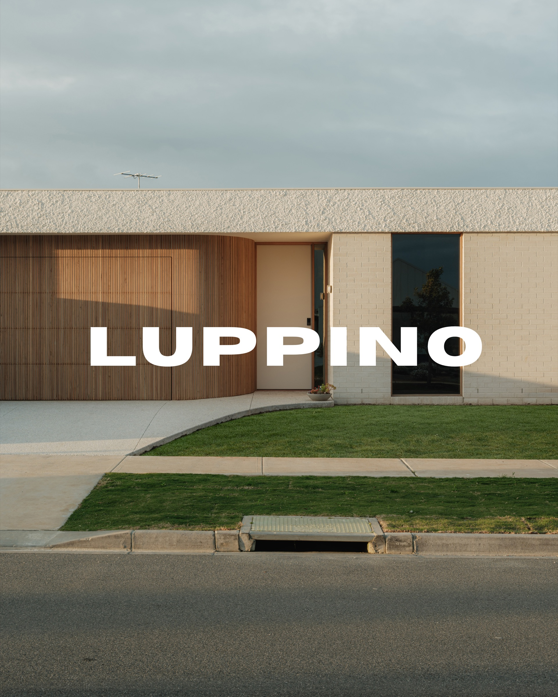
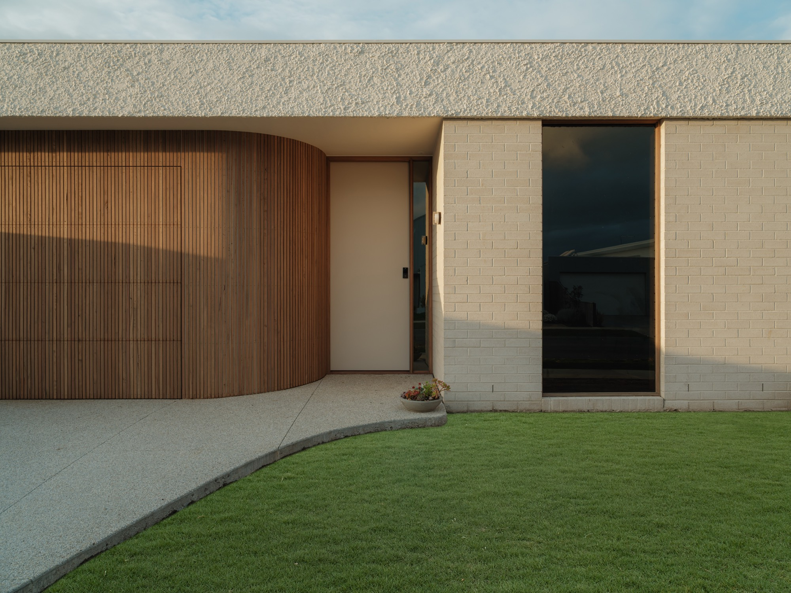
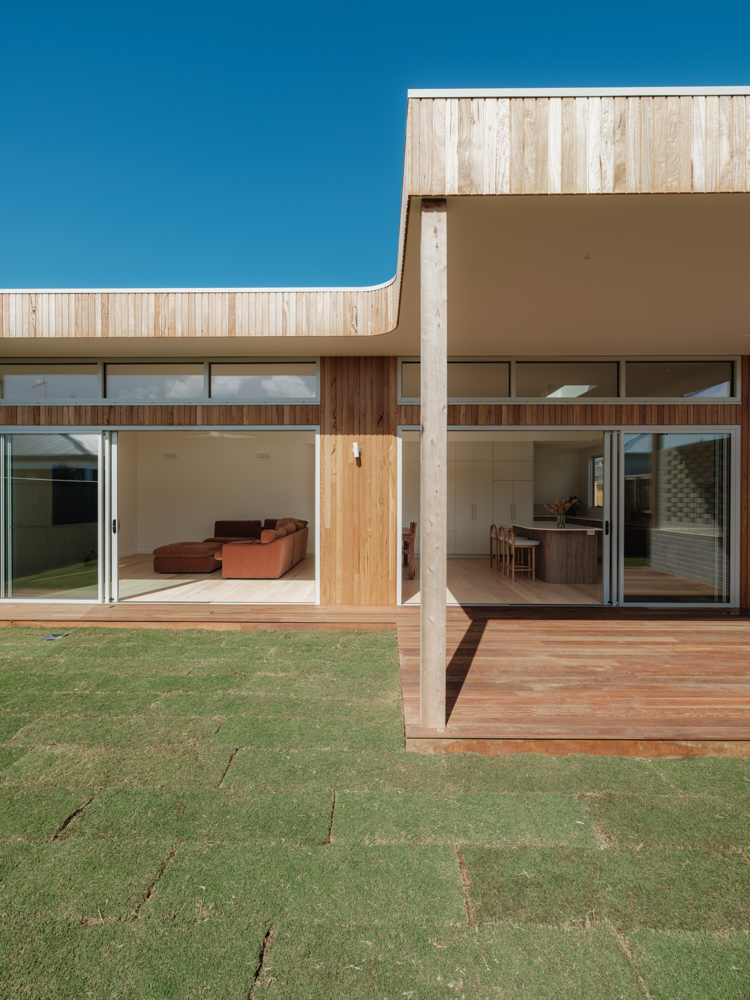

More than
a building
We approach building as a physical manifestation of thought. Every structure is a rigorous inquiry into the relationship between mass, void, and human experience. The discipline demands an absolute rejection of the superfluous.
Our process is anchored in restraint. By limiting our material palette and focusing intensely on proportion and light, we construct spaces that possess a quiet, enduring authority. It is not merely construction; it is the deliberate shaping of silence.
The spaces we inhabit shape the internal dialogue of those within them. Therefore, our intent is always precision. We design environments that command attention through their austerity, serving as stoic backgrounds for the complexities of modern life.
This ideology extends from the sweeping urban gesture down to the one-millimetre reveal. Consistency across all scales is the hallmark of structural integrity. Here, the detail is not an ornament; it is the building itself.


